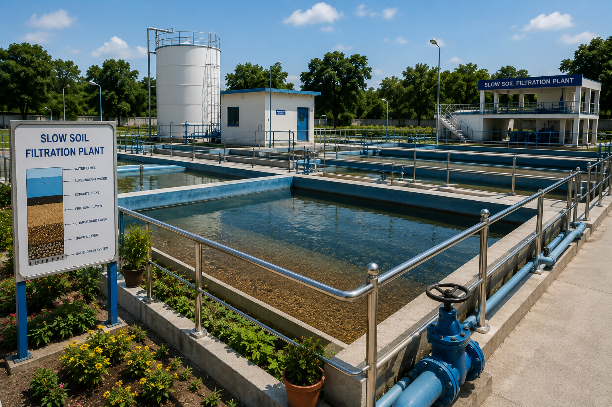

Engineering solutions for sustainable and efficient water filtration using Slow Sand Filtration technology.
Design and optimization of SSF systems for potable water, wastewater and industrial water treatment.